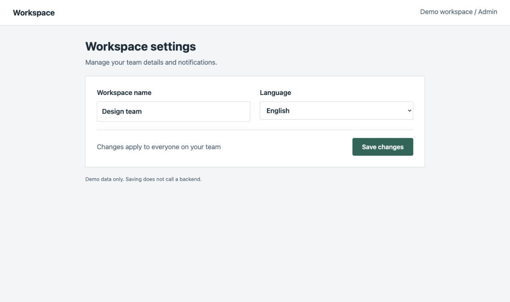
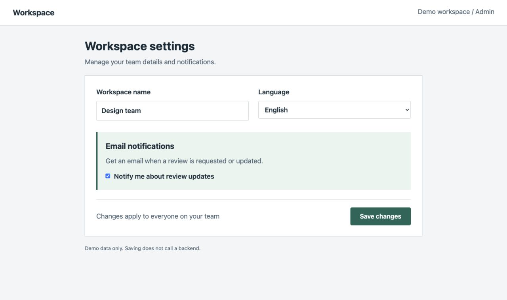
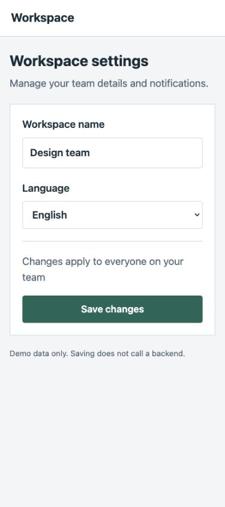
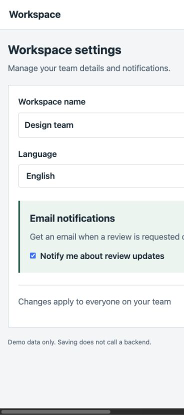

PR VISUAL REVIEW / example/notification-demo
PR #123 visual review
Desktop + mobile / Requested — Local demo · desktop 1280x760 / mobile 375x844 · no live GitHub PR
- Action required: 1
- Optional improvements: 0
- Needs investigation: 0
- Unverified cases: 1
Counts summarize recorded findings. Zero findings do not establish safety or approval to merge.
Commits and environment
- Before
5849a73be8d4b821e4ba63aa29919b793d3a3c0d- After
9eb6c95a2b2e7e1ac6480fadbc8a120f0867bb46- Comparison
- merge-base
- Captured
- 2026-10-07T08:18:23+09:00
- Browser
- Google Chrome via Codex browser connection; running version not recorded
macOS; measured DPR 1.100000023841858; fixed demo data; English page content; browser locale ja; Asia/Tokyo; scroll (0,0). Matching CSS viewports on both revisions. Screenshots are unedited browser exports; scrollbar handling can change export dimensions.
Authentication: No login required / Before: Not required / After: Not required / Role and data equivalence: Not required
Desktop: notification controls added
Expected change verifiedEmail notification controls are present. The existing fields and Save changes button remain visible.
Desktop / 1280 × 760 CSS px
Alignment: Workspace settings heading — Same heading position; horizontal scroll kept at zero.




Gray marks the Before reference; blue marks a change; red marks an issue. Numbers match the notes below.
- 1 · Change: Email notification controls were added here.
Replay steps and conditions
Route: /
Why this screen: The local Git diff adds email notification controls and activates the After layout. See change.patch. This is a demo fixture, not a live GitHub PR.
Browser: Google Chrome via Codex browser connection; running version not recorded
Shared conditions: macOS; measured DPR 1.100000023841858; fixed demo data; English page content; browser locale ja; Asia/Tokyo; scroll (0,0). Matching CSS viewports on both revisions. Screenshots are unedited browser exports; scrollbar handling can change export dimensions.
Case conditions: macOS; measured DPR 1.100000023841858; fixed demo data; English page content; browser locale ja; Asia/Tokyo; scroll (0,0). Matching CSS viewports on both revisions. Screenshots are unedited browser exports; scrollbar handling can change export dimensions.
- Open the matching local revision.
- Set the measured CSS viewport to 1280x760.
- Keep the fixed Design team data and scroll position (0, 0).
- Inspect the controls and capture the viewport.
Mobile: Save moves off-screen
Needs reviewThe new form extends past the 375px viewport. Save changes is no longer visible without horizontal scrolling.
- Introduced in this change · Action required
Save changes is outside the mobile viewport.
Evidence: Before: document width 375px, button x=37..338. After: document width 616px, button x=405..595. See metrics.json and the captures below.
Impact: A user cannot see or reach Save at the initial horizontal scroll position. No full interaction test was performed.
Mobile / 375 × 844 CSS px
Alignment: Workspace settings heading — Same heading position; horizontal scroll kept at zero.




Gray marks the Before reference; blue marks a change; red marks an issue. Numbers match the notes below.
- 1 · Issue: Before: Save is visible. After: the marked right edge clips the form; Save is off-screen to the right (not drawn into the image).
Replay steps and conditions
Route: /
Why this screen: The local Git diff adds email notification controls and activates the After layout. See change.patch. This is a demo fixture, not a live GitHub PR.
Browser: Google Chrome via Codex browser connection; running version not recorded
Shared conditions: macOS; measured DPR 1.100000023841858; fixed demo data; English page content; browser locale ja; Asia/Tokyo; scroll (0,0). Matching CSS viewports on both revisions. Screenshots are unedited browser exports; scrollbar handling can change export dimensions.
Case conditions: macOS; measured DPR 1.100000023841858; fixed demo data; English page content; browser locale ja; Asia/Tokyo; scroll (0,0). Matching CSS viewports on both revisions. Screenshots are unedited browser exports; scrollbar handling can change export dimensions.
- Open the matching local revision.
- Set the measured CSS viewport to 375x844.
- Keep the fixed Design team data and scroll position (0, 0).
- Inspect the controls and capture the viewport.
Post-save success state: not verified
Not verifiedThe demo does not persist settings. A visible Save button is not evidence that saving works.
Desktop / 1280 × 760 CSS px
Alignment: Post-save success state — No genuine successful-save state is available to compare.
The fixture has no backend or post-save success view.
Clicking Save produced no success view. The fixture prevents submission.
Replay steps and conditions
Route: /
Why this screen: The requested save-state check needs a backend response; the fixture intentionally has no backend.
Browser: Google Chrome via Codex browser connection; running version not recorded
Shared conditions: macOS; measured DPR 1.100000023841858; fixed demo data; English page content; browser locale ja; Asia/Tokyo; scroll (0,0). Matching CSS viewports on both revisions. Screenshots are unedited browser exports; scrollbar handling can change export dimensions.
Case conditions: macOS; measured DPR 1.100000023841858; fixed demo data; English page content; browser locale ja; Asia/Tokyo; scroll (0,0). Matching CSS viewports on both revisions. Screenshots are unedited browser exports; scrollbar handling can change export dimensions.
- Click Save changes on the After desktop page.
- Observe that the form remains visible without a success message.
- Inspect the fixture: submit is prevented and there is no backend request.
Unverified scope and limitations
- This is a deliberately constructed demo. The mobile regression is intentional. PR #123 is an illustrative identifier, not an existing GitHub PR.
- The four app screenshots were captured from real Chrome and inspected. The HTML and Markdown use the standard bundled renderer.
- Saving, email delivery, authentication, touch devices, Safari, and PR image publication were not verified.